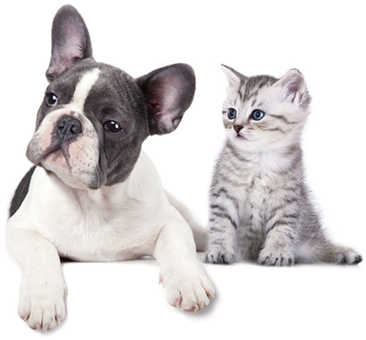

Salvando Animales Cambiando Vidas

Salvando Animales Cambiando Vidas
Al adoptar, le das una segunda oportunidad a una mascota que necesita un hogar y cariño.
La adopción contribuye a reducir la sobrepoblación de animales en situación de calle.
Ganas un compañero fiel y contribuyes a mejorar su calidad de vida.
Asegúrate de cumplir con los requisitos necesarios para adoptar.
Consulta nuestro listado de mascotas y elige a tu nuevo amigo.
Llena el formulario de solicitud de adopción al final de esta página.
Un miembro de nuestro equipo se pondrá en contacto para una entrevista.
Realizamos una visita para asegurar un buen entorno para la mascota.
Si todo está en orden, podrás llevar a tu nueva mascota a casa.